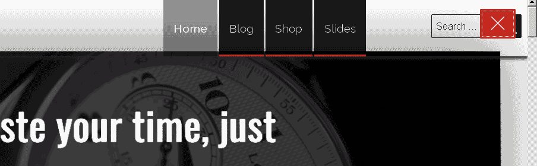

Slides - is the Main FeatureBack to Top
Reveal Presentation Slides plugin is the best way:
- to represent your products
-

- to create business presentation slides
- to create educational slides

- or even create unusual web-page
Set-up & general guide to help you get the most out of your new WordPress plugin. If you are still having trouble after reading this guide, contact our help team.
Reveal Presentation Slides plugin is the best way:
After installing Reveal Presentation Slides plugin (plugin Installation) follow these steps to add new and setup slides.
So you can manage speaker notes on your laptop and display slides on external bigger screen or projector

The next step is to setup Slides
After installing plugin (plugin Installation) go to Dashboard → Slides → New Slide and create you first slide.

If your knowledge of HTML and CSS are poor it is better to create slide like an image and then add it to content of a slide. Press Add Media above content area, select and upload your image for a slide.
Use this slide in slideshow - if you check this option, current slide will be displayed on the page. Default is checked.
Duration time of current slide (works if enabled in Settings → Slides → Presentation Slides Settings → Enable Autoslide)
Here goes notes for speaker (any length text with HTML allowed). Speaker notes display in separate window and you can read it during your presentation.
NOTE! To display speaker notes on front-end just press "S" on your keyboard.
You can set Slide background color.
You can set Full background image.
The last option is Full background video. You can upload your video to your web-site, or insert external video (Youtube, Vimeo, etc.).
To insert external video you should copy-paste html code provided by video hosting services like Youtube, Vimeo, etc.
For Youtube, read instructions HERE
For Vimeo instructions HERE
If you want fullscreen video - it is recommended way to add video to a slide.
It is very convenient to group Slides in categories. You can add as many categories for Slides as you need.
From the right see Categories → All Categories find your desired category, check it and press "Update" or "Publish".

Go to Dashboard → Appearance → Menus, click Categories → View All on the left, check any category you need and click Add to Menu.


Speaker Notes is very convenient way to manage Slides and all your presentation.
How to add link to your slides page:
- After you install Reveal Presentation plugin Go to Dashboard → Appearance → Menus select your Primary Menu (or create new with Display location checked as Primary Menu).
- On the left column you can see elements which you can add to menu, select Slides → View All → check Slides and click Add to Menu.
- Now go to your front page and you should see new menu item appeared.
don't forget to extend your screen on both monitors


This document covers the installation, set up, and use of this plugin, and provides answers and solutions to common problems. We encourage you to first read this document thoroughly if you are experiencing any difficulties before contacting our support team.
Reveal Presentation plugin has many more customization options including stylistic color pickers, custom front page content and other add-ons. And in addition to these fantastic features, you'll also receive dashboard one-click updates and access to world-class plugin support by our team of in-house professional WordPress developers.
Please note that support is only offered for Reveal Presentation plugin. If you already have a Pro license and have any questions that are beyond the scope of this document, feel free to ask us via our dedicated help center.
If you have a problem with the plugin or found a bug, please let us know via our official Help Center. We take pride in our customer support and we will do what we can to assist you. If you are experiencing a plugin issue, please first turn off all third party plugins to see if the problem persists.
Please note that support is only offered for Reveal Presentation plugin. If you have any questions that are beyond the scope of this document, feel free to ask us via our dedicated help center.
To upload through your Dashboard, select “Appearance” and then “plugins”. Next, select the “Add New” tab at the top of the page and then select the “Upload” link, right above the search field. Choose your file and select “Install Now”. Once the plugin is fully uploaded and installed, click “Activate” to activate the WordPress plugin.
The plugin files will be stored on your server in the wp-content/plugins location.
When uploading your plugin with the installer, please ensure you are uploading the plugin .zip file, not the entire package you downloaded. In this case, you will be uploading revealpresentation.zip.
To manually upload your new WordPress plugin, login with your credentials to your website and locate the wp-content folder in your WordPress install files. Upload the zipped Revealpresentation folder into the: wp-content/plugins folder. And inside this folder extract .zip file. Below example of some Hosting provider File Manager:
Once uploaded, activate the plugin by heading to the “plugins” menu in the WordPress Dashboard. Locate the Reveal Presentation plugin and hit “Activate”.
After successful installation in your Dashboard → Appearance → plugins you should see a new RevealPresentation plugin appeared

After activation you'll see a notice to install required plugins
Press "Begin installing plugins" and install all required plugins

Now reload page! (Press F5)
You'll notice that new menu items appeared "Slides", "Front Page Features", "Front Page Overview Slides", "Front Page FAQs" and in Appearance "plugin Options"
Later you'll know what it is


But nothing special you can see, for a while :). Page looks like this:

Let's make some setup.
First go to Pages → Add New. Call it "Front" and just "Publish".
Next Pages → Add New. Call next page "Blog" or something else - this would be your blog page. Press "Publish".
Go to Settings → Reading Settings → Front page displays → A static page (select below) → "Front" and Posts page as "Blog". Save Changes.

Next step is to create Main Navigation (if not created yet)
Go to Appearance → Menus and create new navigation and check "Display location" like "Primary Menu" and Save Menu


 and menu slides down from top.
and menu slides down from top.

Update your permalinks. Go to Settings → Permalinks and click "Save Changes"

Congratulation! Your initial installation complete.
Next you should configurate front page. Instructions are HERE
Now you can visit your site.
Time to customize your plugin!
Add your contacts information. Go to Appearance → Customizing → Contact Details and insert Address, Telephone number and Email.
Add your preffered color scheme in Appearance → Customizing → plugin Skin
You can change Background Color for all page ("Main Background Color"), Accent Color, Color for some sections, Navigation Background Color and Image.
Try to change that options!
NOTE! If you want to set background image for Navigation, set Header Background Color transparency to 0.When you remove Header Background Image, don't forget to set some transparence more than 0.5.

Go to Dashboard → Appearance → Customize → Site Identity.
Reveal Presentation plugin comes with some additional options, which can be found on Dashboard → Appearance → plugin Options.
In Appearance → plugin Options → Navigation Settings you can set Your logo image, Text for logo and switch main navigation for different modes

If "Always display top navigation" is ON Main Navigation is always displayed on Front Page

If "Always display top navigation" is OFF

"Enable Presentation Slides on Front Page" if enabled, Presentation Slides show on Front Page.
When you enable Presentation Slides on Front Page select list appears with categories to choose. Choose only one category of slides to display on front page.
"Enable Autoslide" If enabled, slides change automatically every 15 seconds, but you can change time editing every slide. Go to Slides →Edit Slide.
"Autoslide Time" - Set time of changing slides (You can redeclare it on every post Go to Slides →Edit).
"Enable Loop Presentation" - If enabled, after last slide goes first (click left arrow or right arrow or swipe left - right on mobile devices).
Just set text for page preloader.
Set Blog page background image
Next Tab is "Social Media Settings". Set links for your social media.
"App Store badge url" You can generate it HERE, or additional information HERE
EXAMPLE for Angry Birds Game is "https://itunes.apple.com/us/app/angry-birds-2/id880047117?mt=8"
"Google Play badge" - Full information HERE
EXAMPLE for Tiny Flashlight App is "https://play.google.com/store/apps/details?id=com.devuni.flashlight&pcampaignid=MKT-Other-global-all-co-prtnr-py-PartBadge-Mar2515-1"
"Preloader Settings" - just text for preloader
Go to Dashboard → Appearance → Menus, click Categories → View All on the left, check any category you need and click Add to Menu.